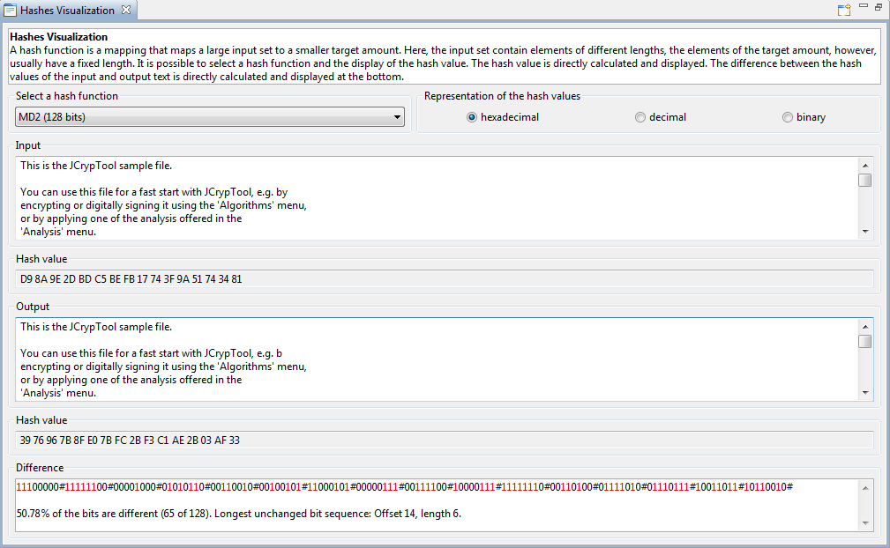
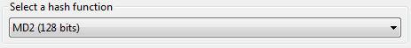
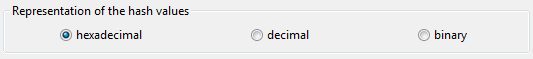
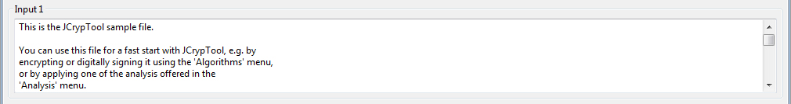
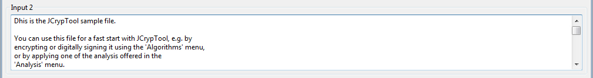
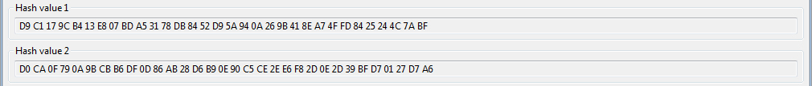
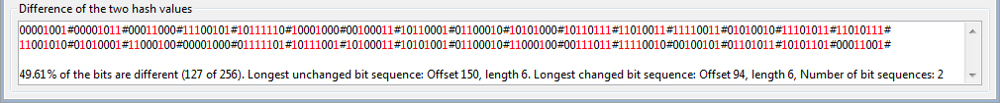
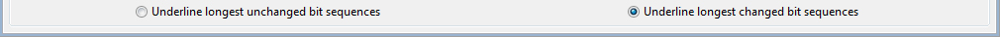

in the menu bar the default text will be loaded into the input 1 and input 2 text area.
in the menu bar the default text will be loaded into the input 1 and input 2 text area.
This online help describes the functionality of the plug-in Hash Sensitivity.
The plug-in can be started via the menu Visuals or via the crypto explorer tab Visuals.

The plug-in consists of a description field and four basic areas: Hash function, Input 1 text, Input 2 text and Difference.
In the description field some statements about the algorithm are displayed dynamically.
In the hash function area you can select a hash function and the representation you want.

There are the following hash functions available:
The hash function can be represented in hexadecimal, decimal or binary.

In the input 1 text area you can enter any text.

The same for the input 2 text area.

The hash values of input 1 and input 2 text will be calculated and displayed below in the corresponding representation.

Based on the entry of the input 1 and input 2 text the differences of the bits in the hash value will be displayed in the differences area. The different bits are highlighted in color red.

There are also some statistics displayed.
You can change at any time the hash function and the representation. The hash values of the input 1 and input 2 text will be calculated dynamically and the differences of the has values will be shown in the difference area.
When you click the radio button Underline longest unchanged bit sequences the unchanged bit sequence will be underlined. The same is for the button Underline longest changed bit sequences.

When you click the Restart icon in the menu bar the default text will be loaded into the input 1 and input 2 text area.
References